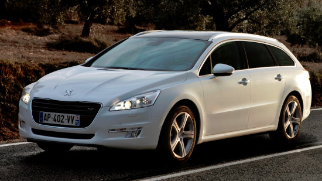

Peugeot 508 SW – переднеприводный пятидверный универсал среднеразмерного класса (он же "D" - сегмент по европейской квалификации), сочетающий в себе привлекательный дизайн, вместительный салон и разумную цену, который адресован, в первую очередь, семейным людям с хорошим уровнем годового дохода. Грузопассажирская модель первой генерации справила дебют в маре 2011 года ( на международном Женевском автосалоне), после чего поступила в серийное производство...а в конце августа 2014-го предстала перед аудиторией в обновленном виде - на стендах в мотор-шоу в Москве (преобразившись в едином ключе с одноименным седаном).
Снаружи "первый" Peugeot 508 SW выглядит элегантно, современно и сбалансировано, который отличается от трехобъёмника лишь "универсальным" оформлением задней части (причем такая компоновка вообще не добавляет ему тяжеловесости) Автомобиль обладает следующими габаритами: длина - 4829 мм, высота - 1476 мм, ширина - 1828 мм. Колесная база вытянута у пятидверки на 2817 мм, а ее клиренс не превышает 170 мм. "Походная" масса универсала колеблется от 1485 кг 1735 кг (в зависимости от версии).
Блок со скроллом
Антирадар в телефоне
Информацию о камерах фиксации нарушений можно получить бесплатно.Они отмечены почти во всех онлайн-навигаторах. однако наш недавний тест показал, что в памяти программ - далеко не все комплексы. Хотя, казалось бы, обновления в режиме реального времени позволяют показывать максимально актуальную картину. Есть базы данных в видеорегистраторах, радар-детекторах и комбо-устройствах. Но и у них не все гладко. Обновления выходят раз в неделю и реже, а свежеустановленные камеры попадают в базу через месяц, а то и два. Вот и последний тест таких гаджетов не выявид приборов со стопроцентными знаниями. А стоят аппараты с подсказками о радарах от 5000 - до 20 000 рублей и более. Золотой серединой выглядят мобильные приложения - антирадары. Излучение измерителей скорости смартфону ловить нечем, зато обновление точек в памяти у всех дикларируются как ежедневные. Цена большинства программ не выше 300 рублей: платишь один раз и поьзуешься постоянно. Выгодно ! Информацию о камерах фиксации нарушений можно получить бесплатно.Они отмечены почти во всех онлайн-навигаторах. однако наш недавний тест показал, что в памяти программ - далеко не все комплексы. Хотя, казалось бы, обновления в режиме реального времени позволяют показывать максимально актуальную картину. Есть базы данных в видеорегистраторах, радар-детекторах и комбо-устройствах. Но и у них не все гладко. Обновления выходят раз в неделю и реже, а свежеустановленные камеры попадают в базу через месяц, а то и два. Вот и последний тест таких гаджетов не выявид приборов со стопроцентными знаниями. А стоят аппараты с подсказками о радарах от 5000 - до 20 000 рублей и более. Золотой серединой выглядят мобильные приложения - антирадары. Излучение измерителей скорости смартфону ловить нечем, зато обновление точек в памяти у всех дикларируются как ежедневные. Цена большинства программ не выше 300 рублей: платишь один раз и поьзуешься постоянно. Выгодно !Информацию о камерах фиксации нарушений можно получить бесплатно.Они отмечены почти во всех онлайн-навигаторах. однако наш недавний тест показал, что в памяти программ - далеко не все комплексы. Хотя, казалось бы, обновления в режиме реального времени позволяют показывать максимально актуальную картину. Есть базы данных в видеорегистраторах, радар-детекторах и комбо-устройствах. Но и у них не все гладко. Обновления выходят раз в неделю и реже, а свежеустановленные камеры попадают в базу через месяц, а то и два. Вот и последний тест таких гаджетов не выявид приборов со стопроцентными знаниями. А стоят аппараты с подсказками о радарах от 5000 - до 20 000 рублей и более. Золотой серединой выглядят мобильные приложения - антирадары. Излучение измерителей скорости смартфону ловить нечем, зато обновление точек в памяти у всех дикларируются как ежедневные. Цена большинства программ не выше 300 рублей: платишь один раз и поьзуешься постоянно. Выгодно !Информацию о камерах фиксации нарушений можно получить бесплатно.Они отмечены почти во всех онлайн-навигаторах. однако наш недавний тест показал, что в памяти программ - далеко не все комплексы. Хотя, казалось бы, обновления в режиме реального времени позволяют показывать максимально актуальную картину. Есть базы данных в видеорегистраторах, радар-детекторах и комбо-устройствах. Но и у них не все гладко. Обновления выходят раз в неделю и реже, а свежеустановленные камеры попадают в базу через месяц, а то и два. Вот и последний тест таких гаджетов не выявид приборов со стопроцентными знаниями. А стоят аппараты с подсказками о радарах от 5000 - до 20 000 рублей и более. Золотой серединой выглядят мобильные приложения - антирадары. Излучение измерителей скорости смартфону ловить нечем, зато обновление точек в памяти у всех дикларируются как ежедневные. Цена большинства программ не выше 300 рублей: платишь один раз и пользуешься постоянно. Выгодно !